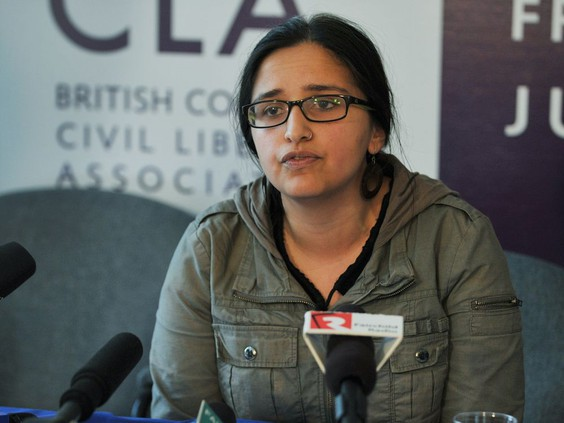

New Westminister "Sanctuary Schools"
January 9th, 2021
TDC_ARTICLE_START
A sanctuary school policy for students with uncertain immigration status is expected to be approved by the New Westminster School District next month.
Mark Gifford, school trustee, said Thursday that the district’s education committee had voted unanimously in favour of adopting the new policy. The board will vote on the policy Tuesday, Feb. 28.
TDC_ARTICLE_STOP
School Trustee Mark Gifford
Yeah I gotta be honest, Mark Gifford kind of looks like that Conservative Fag from UBC, Michael Korenberg. A man so pussy that, when asked to resign by Anti-Whites over wearing a MAGA hat, he just outright resigned. These guys are basically soft doughy fucks who exist to be bullied.
TDC_ARTICLE_START
“The sanctuary school policy has been developed to ensure that all children can access public education in New Westminster without fear, regardless of their immigration status,” he said.
“It is not about international education students or visitors. It is about folks who, for whatever reason, are in a precarious immigration state.”
As far as implementing the new policy, Gifford said the district will have to go through a learning process over the next several months. Gifford expected it to be fully in place for enrolment for the 2017-2018 school year.
TDC_ARTICLE_STOP
Harsha Walia, founder of the BC Chapter of "No One is Illegal"
"Folks."
Notice how these people always seem to use that word. "Folks".
I sure hope that no child trans "folks" with "precarious immigration state," get denied a taxpayer funded education at an ever shittifying school. Thank god non-Canadians are having your taxes pay for them to ruin your childs school.
TDC_ARTICLE_START
Harsha Walia, co-founder of the B.C. chapter of the immigrant rights group No One Is Illegal, said all that the School Act, which governs public education in B.C., requires is that a student be “ordinarily resident” in B.C.
Walia said that in the absence of direction from Victoria or a policy or set of guidelines in every district, each school can determine how it will treat students or parents with a questionable or non-existent immigrant status.
“Absolutely for us, it requires clarity from the province that the spirit of the law is that a student only needs to be ordinarily resident,” she said.
Walia said that No One Is Illegal had been working with the Burnaby school district for a year on the new approach.
“It is a huge step in the right direction to ensure that there is access for students with precarious immigration status — or Canadian students whose parents have precarious immigration status,” she said.
“Before it was fairly arbitrary. Each school would decide what it would do. Now, there are new practice and procedures that the Burnaby school board is implementing.”
TDC_ARTICLE_STOP
 So basically this is signalling, because this policy is effectively already implemented. But it's nice to know the priorities of the people who are currently responsible for your childs education. That is, making sure that anyone but your child gets educated.
So basically this is signalling, because this policy is effectively already implemented. But it's nice to know the priorities of the people who are currently responsible for your childs education. That is, making sure that anyone but your child gets educated.
So basically this is signalling, because this policy is effectively already implemented. But it's nice to know the priorities of the people who are currently responsible for your childs education. That is, making sure that anyone but your child gets educated.